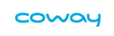

고객 건강관리
고객 건강관리
고객 건강관리
평상 시 생활습관관리부터 중대질환 발병 시 전담간호사에 방문간호에 이르기까지 고객별 1:1 맞춤 건강프로그램을 통해 건강할 때는 더욱 건강하게, 아플 때는 신속한 치료지원으로 빠른 회복에 도움을 드립니다.
병원과 환자 연계 서비스 제공
병원방문 전(예방, 질병의심) - 방문 후(진단, 회복) 관리
-
Human Coaching
의사
간호사
임상 영양사
운동처방사 -
평상 시 건강관리
전문의료진 전화상담
건강정보제공
건강검진 예약대행 및 우대 -
신체이상 시 치료지원
병의원 진료안내
병원 진료예약대행
해외의료지원 -
질병발생 시 중대질환관리
미숙아 방문서비스
병원 방문서비스
방문교육
맞춤 질병정보 -
가족우대
건강검진 우대혜택
녹십자 제휴서비스
-
내과, 외과, 소아과 등 15개 진료과목 전문의와 임상경험이 풍부한 간호사 그룹이 심리상담사, 임상영양사, 운동관리사 등 건강관련 전문가와 함께 질병 예방을 위한 건강관리 교육부터 맞춤형 재활상담 등 1:1 건강코칭 서비스를 제공합니다.
- 11:1 실시간 전문의료진 상담진료과목별 전문의와 실시간 건강코칭
- 2디지털 헬스코칭디바이스와 연동, 데이터 분석을 통한 실시간 온라인 건강, 운동, 영양상담
- 3생활습관코칭비만, 당뇨 고혈압 등 만성질환 관리를 위한 건강위험도 예측, 합병증 예방을 위한 생애 주기형 상담
- 4영양코칭식이습관 평가를 통한 질환별 맞춤 식단정보 제공, 영양사에 의한 식이요법 코칭
- 5운동코칭운동습관 문진 및 상담기반으로 개인별 맞춤운동 추천, 질환별, 환경별 재활운동 코칭
- 6육아코칭신생아 중환자실, 소아과, 산부인과 등 임상경험이 풍부한 간호사에 의한 임신부터 출산, 육아를 위한 시기별 전문상담
- 7심리코칭심리전문가에 의한 심층상담, 필요 시 검사를 통한 심리치료그램 연계
- 8학습코칭학습장애 및 중독, 학교부적응 등 문제행동에 대한 체크를 통한 학습진로 상담
-
녹십자헬스케어는 약 4만건여건의 전국 병 · 의원 정보 및 13,000여 명의 종합병원 의료진 정보를 보유, 의료서비스가 필요한 고객에게 병원정보를 비교 안내해드리며, 고객 요청 시 진료예약서비스까지 One-stop으로 제공합니다.
- 1질환 별 전문 의료진 안내
- 2진료분야 별 전문병원 안내
- 3지역 별 병 · 의원 안내
- 4보유장비 별 병원안내
- 5야간진료 병 · 의원 안내
- 6중대질환의 진료 및 수술대기 일정 안내
- 7요양병원 인증평가 결과기반 요양병원 안내
- 8종합병원 진료예약 대행
-
고객상담
고객 기본정보 수집
질환 및 증상 내용 확인 -
병원정보
병원(희망병원) 및 진료과, 의료진 확인
병원정보 안내 및 명의 추천
기타병원 및 진료의 정보제공 -
안 내
외래진료 예약 알림
-
진료확정
병원 및 진료과 / 진료의 확정
-
진료예약
병원 예약 진행 진료예약
내용 입력 및 문자발송
예약내용 알림
-
암, 심 · 뇌혈관질환 등 중대한 질환이 발생했을 때 전문간호사가 직접 병원으로 방문하여 해당질환에 대한 정확한 정보뿐만 아니라, 고객의 상황에 따른 맞춤형 교육자료를 제공하고, 치료 받는 기간 중에 불안한 마음을 따뜻하게 위로하고 지지하여 치료에 전념할 수 있도록 도와 드리는 서비스 입니다.
- 1병원예약 및 진료동행질환에 따른 적절한 의료진 안내 및 예약, 해당 질환에 대한 전문지식을 가진 간호사가 병원 진료시 동행
- 2질병관리 및 교육진단받은 질환에 대한 맞춤형 교육자료 제공 뿐 아니라 자세한 설명을 통해 현 상황에 대해 정확히 인지하고 치료에 능동적으로 참여할 수 있도록 도와드립니다.
- 3치료정보제공병원에서 결정된 치료에 대한 설명뿐만 아니라 치료 중 궁금한 사항이나 부작용에 따른 대처 등 수시로 건강상담을 도와드려 정서적으로 안정을 취할 수 있도록 도와드립니다.
- 4생활습관 관리암 재발과 이차암을 예방하기 위해 간호사가 지속적으로 관리해 드리고, 운동처방사와 임상영양사의 상담을 통해 건강한 생활습관을 유지할 수 있도록 도와드립니다.
- 8차량에스코트중대 질환 수술을 위해 3차 의료기관 입.퇴원시 전담 간호사 및 고급차량을 통한 에스코트 서비스를 제공해드립니다.
-
- 